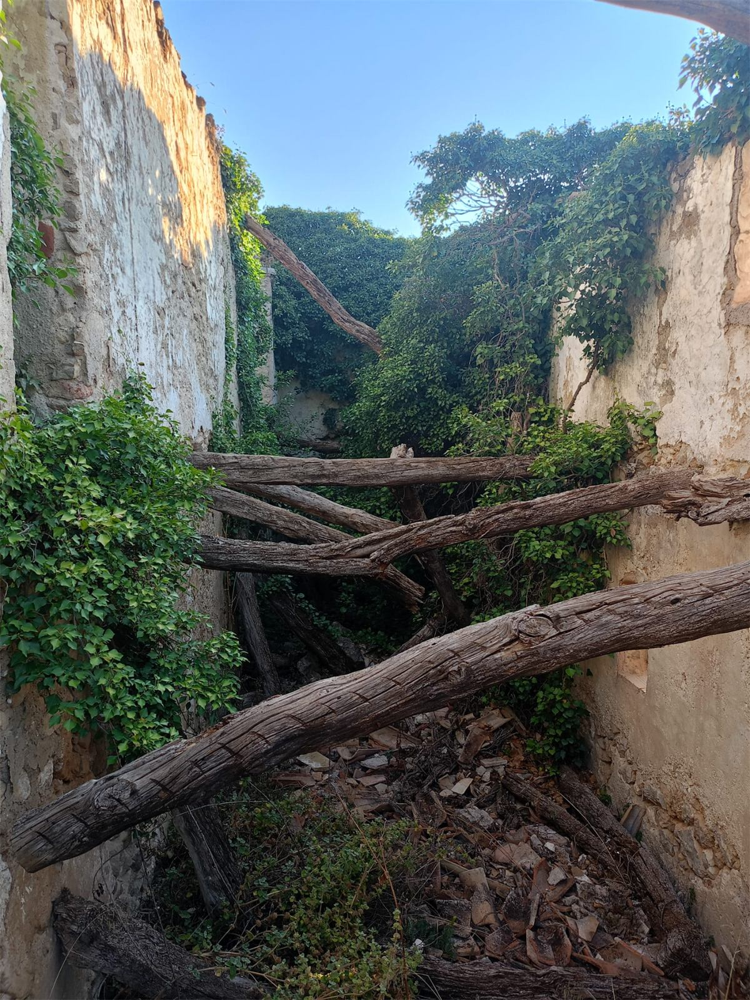
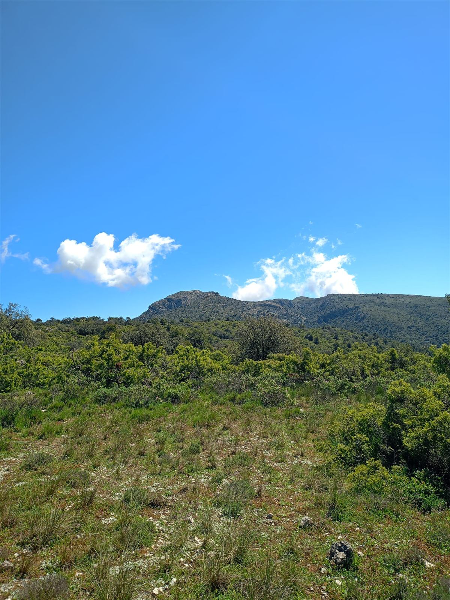
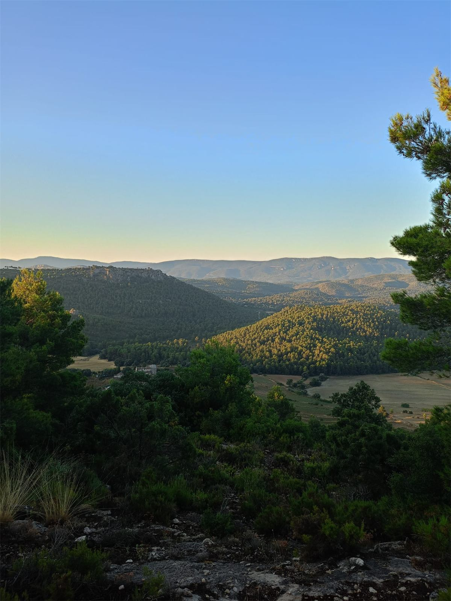
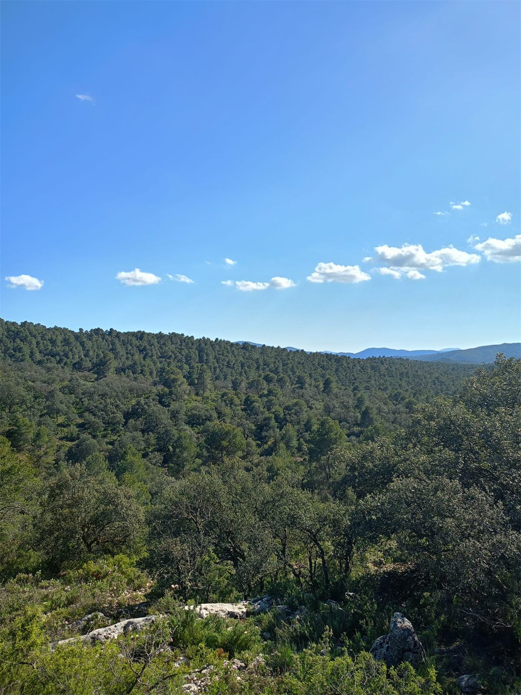
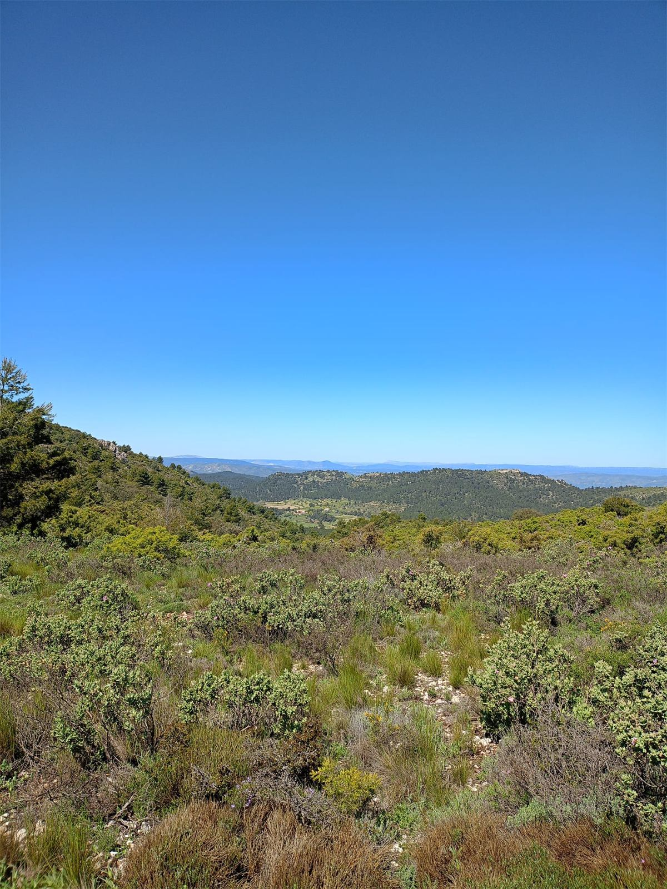
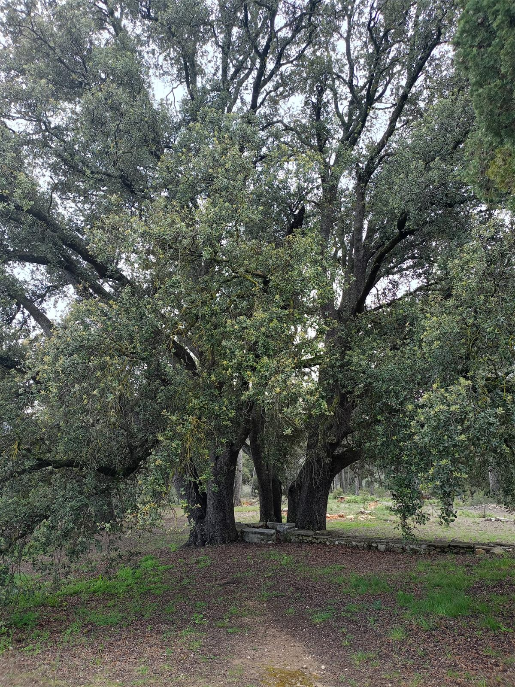
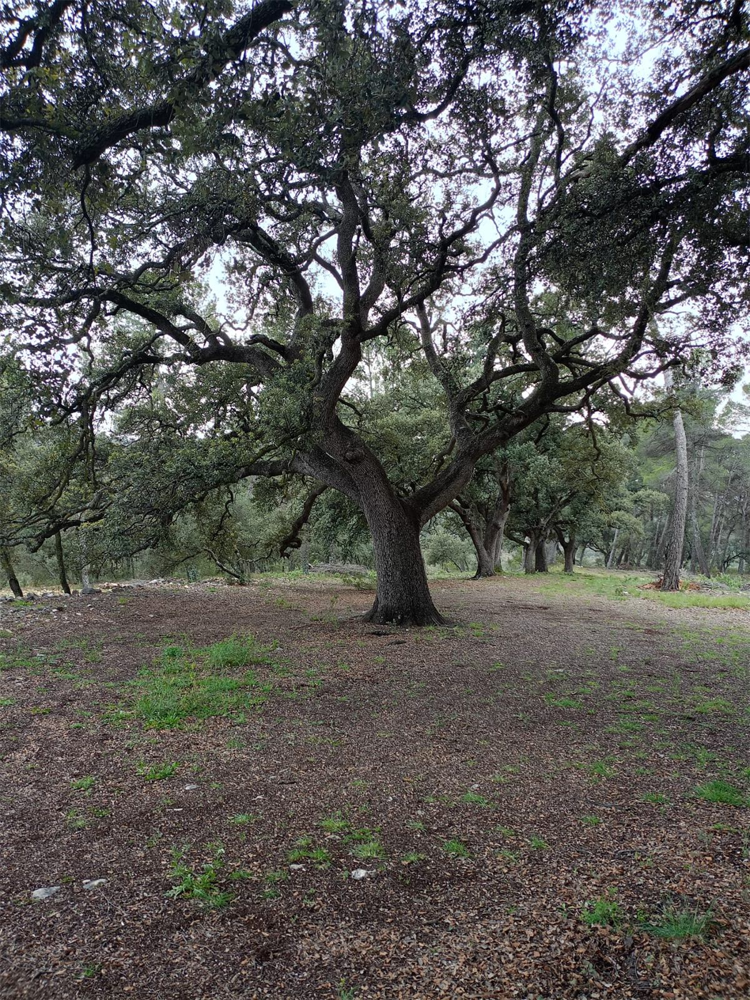
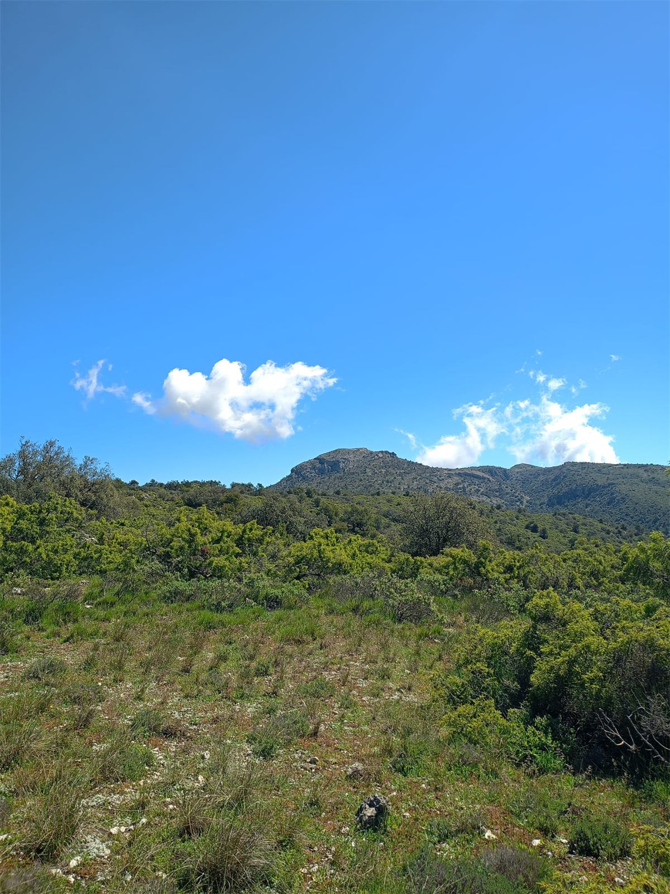
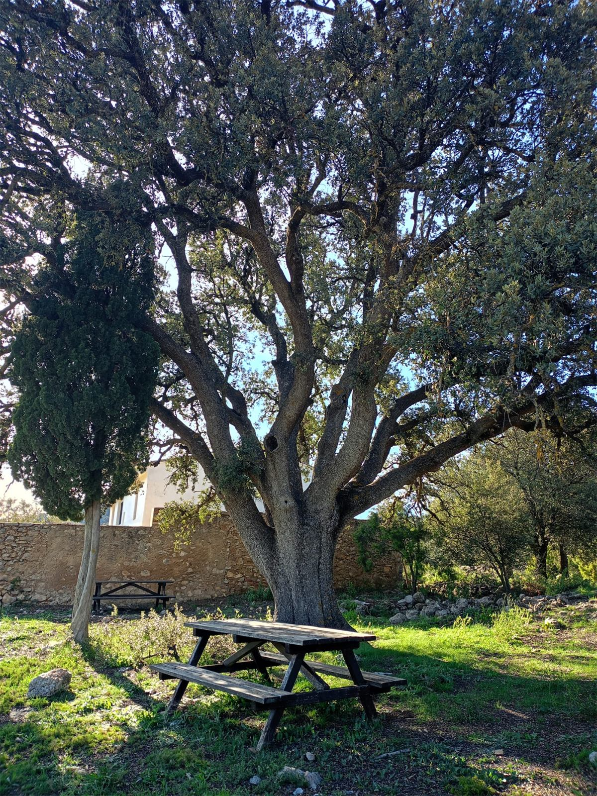
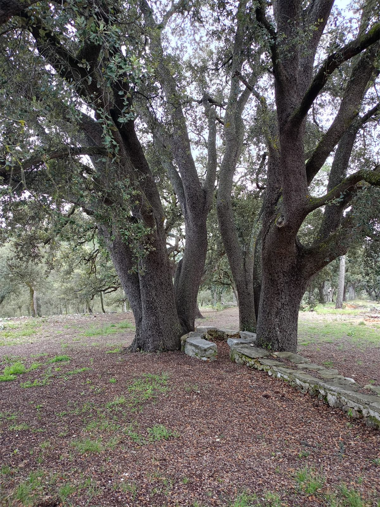

Analizamos tu empresa, detectamos dónde la IA genera más impacto y lo implementamos. Sin genéricos, sin rodeos.
Por qué elegirnos
Combinamos inteligencia artificial de última generación con conocimiento real del sector forestal. Primero entendemos tu empresa, luego ejecutamos el cambio.
No somos una consultora genérica. Conocemos el sector y diseñamos soluciones adaptadas a su realidad operativa y de negocio.
Auditamos tus procesos, mapeamos cuellos de botella y revisamos tu ciberseguridad antes de proponer nada.
Revisamos accesos, datos, dependencias y riesgos técnicos y humanos. Porque la IA sin seguridad es un problema.
Cada solución tiene objetivos claros: más rendimiento, menos coste y mayor control sobre tu gestión forestal.
Nuestros servicios
Dos servicios diseñados para transformar tu empresa: primero entendemos dónde estás, luego ejecutamos el cambio.
Auditamos tus procesos, detectamos cuellos de botella, revisamos tu ciberseguridad y te entregamos un roadmap de implementación a medida con impacto real.
Ejecutamos el roadmap: orquestamos la tecnología, implementamos las mejoras e integramos IA y automatización en tu empresa paso a paso.










A quién ayudamos
Trabajamos con empresas y profesionales de toda la cadena forestal que quieren dar el salto a la gestión inteligente.
Blog
Articulos, casos de uso y tendencias sobre inteligencia artificial en el sector forestal.
Explora los escenarios económicos de Anthropic sobre la inteligencia artificial y su impacto en el sector forestal español.
Leer artículo →El inversor Michael Burry advierte sobre los riesgos del crecimiento de la IA. Qué significa para las empresas forestales.
Leer artículo →El congresista Chip Roy alerta sobre los peligros de la IA. Analizamos las implicaciones para el sector forestal español.
Leer artículo →Cuéntanos tu proyecto. En 24 horas te respondemos con una propuesta adaptada a tu empresa, sin compromiso.